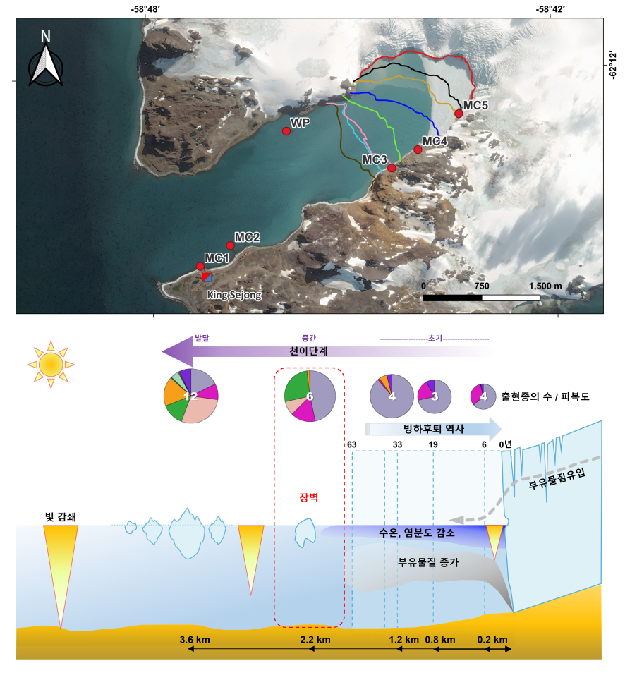

[보도자료] 인공위성으로 북극해 얼음판 읽는 법
극지연구소(소장 강성호)는 기존 방법 대비 오차를 최대 60% 줄인 여름철 북극 해빙 두께 추정법을 개발했다고 밝혔다.
자세히보기 →
[보도자료] 남극바다, 탄소보관 기능 '삐걱'
극지연구소 (소장 강성호)는 남극 연안 지역에서 이산화탄소가 배출되는 현상을 확인했다고 밝혔다.
자세히보기 →

[보도자료] 기후변화, 남극 바다의 종 다양성을
위협한다.
극지연구소 (소장 강성호)는 과거에 얼음에 덮여있던 바다에서 해조류 군락의 발달이 더디게 일어나는 현상을 확인했다고 밝혔다.
자세히보기 →
[보도자료] Just Arrived! 남극과 북극, 인천
공항으로...
극지연구소 (소장 강성호)는 7.26.~11.30.까지 인천국제공항에서 협업 전시 <남극/북극 출발 → 인천공항 도착>을 개최한다고 밝혔다.
자세히보기 →